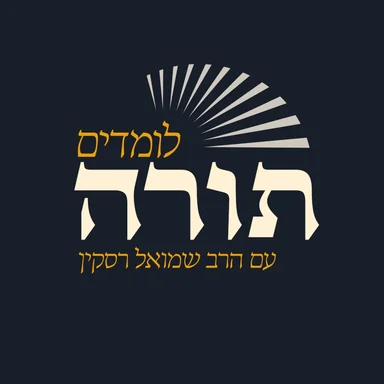
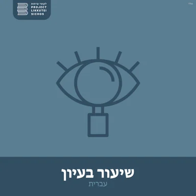

תורה־פּוֹד
פודקאסטים ושיעורי תורה להאזנה
בחרו פרק והתחילו להקשיב.
המשך האזנה
הפרקים החדשים
חיפוש
הצעות להתחלה
הצגת הכלעקבו אחרי פודקאסטים כדי לראות כאן את הפרקים החדשים שלהם.
פיד חיצוני
לומדים תורה עם הרב שמואל רסקין
הרב שמואל רסקין
286 פרקים
פרק אחרוןריחות וטעמים של שבת | פרשת חיי שרה תשפ"ז
פיד חיצוני
שיעור בעיון עברית
Project Likkutei Sichos
200 פרקים
פרק אחרוןלמי התינוק הזה הכי דומה - הרב שאול רייצס לקו"ש חלק ל שיחה א לפרשת תולדות
פיד חיצוני
שיעורי הרב נחמנסון
הרב יהודה לייב נחמנסון
691 פרקים
פרק אחרוןהתגרשה, התחתנה שוב – ואז התברר שאולי היא עדיין אשת איש!▪️הרב נחמנסון▪️(כולל הוראה ומשפט)